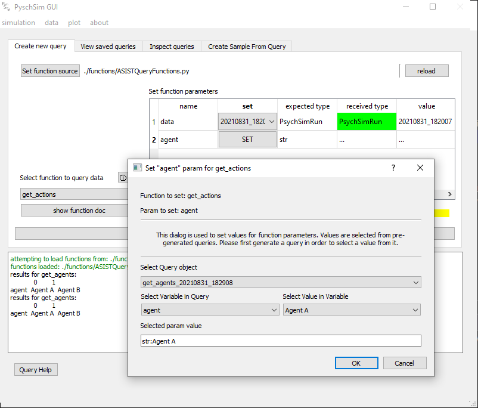

GUI Functionalty¶
Simulation¶
Gui config¶
Paths to the psychsim and atomic repositories must be set in config.ini. Note: these repositories can be cloned from github and should be cloned somewhere on your local machine. Custom config files can be loaded through the simulation>Load config dropdown. NOTE: to use ASIST code, some extra paths must be added (see: Interfacing With ASIST code.) An example of a config file with paths set is below:
[PATHS]
psychsim: /Users/christopherturner/Documents/GLASGOW_MARSELLA/psychsim
atomic: /Users/christopherturner/Documents/GLASGOW_MARSELLA/atomic
model_learning: /Users/christopherturner/Documents/GLASGOW_MARSELLA/model_learning
simulation: ./sim_scripts/GameTheoryTom.py
function_source: ./functions/ASISTQueryFunctions.py
View simulation info (start screen)¶
The ‘run sim’ screen lets you load a simulation file, run the sim (and stop it), and rename the output data.
Select and load simulation file: set the path to the simulation script and load it
Load Simulation: load the simulation file (import it) into the GUI. This button allows changes to simulation code to be quickly implemented, then ‘re-loaded’ in the sim without having to re-find the path.
RUN SIM: becomes active when a valid simulation is loaded. Start the simulation thread
STOP SIM: Stop the simulation thread and save the data
RENAME: Rename the run to a desired name
data¶
view table of stored data¶
View loaded raw shows you info about data loaded in the GUI. These could come from simulation runs, or from loading saved data sets.
Data is saved and loaded from Pickle file
RENAME: rename the data ID for use through the GUI.
Save: Save the data to disk (as a pickle file). Data is saved to the ‘sim_output’ directory
Load data from pickle: Load saved (pickle) data
Query¶
create query from data/sample¶
Data can be saved as any arbitrary python object. The query screen allows custom functions to be run to extract desired information from simulation outputs. Different queries results can also be compared (Diff), or sampled.
New functions can be written to handle different queries, and different simulation output types (see: :Function Definitions.)
Queries are saved for viewing, diffing, sampling, and plotting.
Different query functionality is accessed via the different tabs. Each tab is described below.
Create new query¶
Create and save a new query. This tab lets custom functions be executed to extract data in specified ways for viewing and plotting.
Set function source: Set the path to the custom function definitions file. The default path is functions/AsistQueryFunctions.py (see: :Function Definitions for more).
reload: Reload the function definitions file. This allows changes to be made to the function file and reloaded without restarting the gui.
Set function parameters: This table is populated by parameters defined for each function in the function definitions file (see: :Function Definitions for more).
Select function to query data: Select the custom function to run on the data. E.g. get_actions will extract actions for agents after a psychsim simulation run. Selecting the function populates the parameter table.
Show function doc: display the docstring of the function as written in the functions definitions file.
Execute function: execute the function. This pops up the results dialog and saves the query for later viewing.
Results Dialog: allows you to rename the query
Setting function parameters¶
Params which are named data and params of type bool are set with a dropdown box in the set params table. All other params are set by selecting values from pre-generated queries. For the example, in the image below, to set the ‘agent’ param in get_actions, first we must generate a query containing agents (for example using get_agents). Clicking on the ‘SET’ button opens the set dialog. This allows you to select a query, variables within the query, and values in the variables to set as a parameter.
View saved queries¶
View saved queries, save as a CSV or pickle file to disk, and load saved query pickles.
Select Query: Shows saved query info NOTE These are saved internally, not saved to disk.
View Query Data: Shows saved queries data.
Save as CSV: Save the query as a CSV file to disk.
Save as pickle: Save the query as a pickle file to disk.
Load query from pickle: Load a query saved as a pickle file from disk.
Delete selected query: delete the currently selected query. A dialog will appear asking if you really want to.
Inspect queries¶
Diff two queries created by the same function. Only queries with the same columns can be compared.
Step through a query.
Diff queries¶
Query 1: First query to compare
Query 2: Second query to compare
DIFF: Execute the comparison
The diff window below shows the two results side by side. Coloured text indicates a difference between the two queries. Black text indicates the row is the same.
Step through query¶
Query: Select query to step through
View: Open the step through window
The step through window allows to step through selected variables in the selected query.
Create Sample from Query¶
Queries can be sampled by selecting values from variables within the query result. They can be sampled using a range or a category function. Range function only works for numerical values, where as categorical can be applied to any value.
The sampling works by selecting a range or category from a specific variable, and then selecting all rows that meet that criteria across the entire query result data.
Select query: The query to create a sample from
Sample variable: Variable within the query results to create the sample from
Sample function: Either ‘range’ or ‘category’
Filter Sample: Select the values to create the sample with (this will open the below dialogs)
The range dialog lets you select a range of values (within the maximum range of the selected variable)
The category dialog lets you select individual values from the selected variable. Multiple values can be selected.
plot¶
plot query results¶
Allows you to plot queries as plotly plots.
Only queries can be plotted, not raw data.
creating a new plot opens a new plot window
multiple plot windows can be open at once
Test datasets enabled: For testing, allows you to use built-in datasets to test plotting functionality
Create new plot: Opens a new plot window
Saved Plots: Shows a list of saved plots. Double clicking on a plot reopens it. Plots are only saved internally in the Gui, not to disk.
Remove selected from list: Remove a saved plot from the list
query/sample: select the query or sampled query to plot
X-axis: select the variable to put on the x-axis
X-alias (ticks): select the variable to use as x-axis ticks
Y-axis: select the variable to put on the y-axis
Group: select the variable to group traces by. e.g. if you want to view the actions of multiple agents over time. You might want to group by agents. Do differentiate the traces. NOTE data must be in ‘long format’ in order to do this (e.g. in the image below).
Plot type: select the type of plot to display. NOTE not all plot types are suitable for all plots. It is up to the user to know which plot is useful for the given variables.
Stat: select the stat to apply. This is applied over the ‘group by’ variable
error bars (std): enable error bars showing 1 standard deviation on the selected stat plot (mean or median)
Legend position: select if and where to display the legend
Add to plot: add the trace with given parameters to the current plot
Undo add: undo the previously added plot
Clear: clear the plot and start from scratch
Save and close: Save the current plot. Saved plots appear in the list below this button. Saved plots can be viewed by clicking on the name in the list.